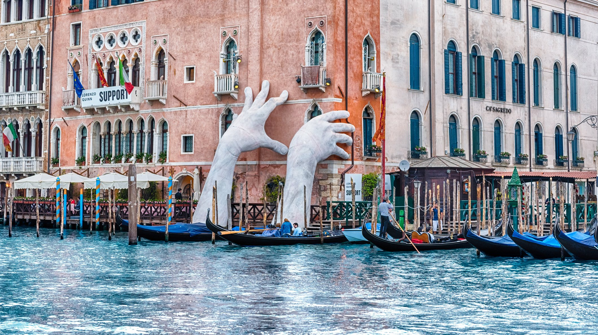

Aqui esta uma foto de umas "Mãos" muitos conhecidas em Veneza

Aqui esta uma foto dos canais de Veneza!
Este é um monumento muito conhecido!
Poema
Em Veneza, o que mais pesa
é a luz que sobre ela cai.
Vinda do Adriático, desmaia
sobre a cidade, sem cor, opaca.
A água sob as casas (represa
a reboar, a rebater de dentro
das pedras e sombras) não pesa,
não é mais que sombra; não embaraça.